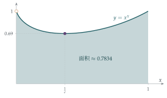

STEP III 2009，第 8 题
继续之前，请先阅读题目（原题为英文）。题目载于 STEP Support Programme 的题目资料库： step.maths.org/questions/09-s3-q8
引子
每个学生迟早都会学到 \((a + b)^2 \neq a^2 + b^2\)。那条错误的等式有个戏称，叫做“大一新生之梦”（freshman’s dream）。本题要证明的结果，看起来同样像初学者会犯的错： \[\int_0^1 x^x\,\mathrm{d}x = \sum_{n=1}^{\infty} \frac{(-1)^{n+1}}{n^n} = 1 - \frac{1}{2^2} + \frac{1}{3^3} - \frac{1}{4^4} + \cdots,\] 以及与它配对的 \(\int_0^1 x^{-x}\,\mathrm{d}x = \sum_{n=1}^\infty \frac{1}{n^n}\)。\(x^x\) 的积分（integral）竟然变成 \(n^{-n}\) 的和：这似乎好得令人难以置信，所以它被称为大二学生之梦（sophomore’s dream）。但它确实成立，由约翰·伯努利（Johann Bernoulli）于 1697 年发现。
证明用到三个你在大学会不断遇到的想法：比较指数函数与幂的极限（limit）、归约公式（reduction formula），以及把函数展开成幂级数（power series）再逐项积分（integrating term by term）。
动笔之前
函数 \(x^x\) 在 \(x = 0\) 处无法用你所知的任何公式定义（\(0^0\) 的意义并不明确）。当 \(x\) 从上方趋近 \(0\) 时，它的表现如何？试用计算机计算 \(x = 0.1\)、\(0.01\)、\(0.001\) 的情况。
\(0.1^{0.1} \approx 0.794\)，\(0.01^{0.01} \approx 0.955\)，\(0.001^{0.001} \approx 0.993\)。看来它趋近 \(1\)。第 (i) 部分正是证明这一点，由此可知被积函数（integrand）在 \(0\) 附近表现良好，这个积分是有意义的。\(x^x\) 在 \((0, 1]\) 上的图像由接近 \(1\) 的地方出发，下降至极小值，再在 \(x = 1\) 处回到 \(1\)（图 4.5.1）。
逐步解题
阶段 1 幂胜过对数
当 \(x \to 0^+\) 时，\(\ln x \to -\infty\)。哪一个代换（substitution）可以把 \(x \to 0^+\) 变成 \(t \to \infty\)，并把 \(x^m(\ln x)^n\) 变成类似 \(e^{-mt}t^n\) 的式子？
设 \(x = e^{-t}\)。当 \(x \to 0^+\) 时，\(t \to \infty\)，而 \(\ln x = -t\)，所以 \[x^m(\ln x)^n = e^{-mt}(-t)^n = (-1)^n e^{-mt}t^n \to 0.\] 用文字来说：当 \(x \to 0\) 时，\(x\) 的任何正数次幂趋向零的速度，都快过 \(\ln x\) 的任何次幂趋向无穷的速度。■
取 \(m = n = 1\)，得 \(x\ln x \to 0\)；由于指数函数是连续（continuous）的，所以 \(x^x = e^{x\ln x} \to e^0 = 1\)。■
阶段 2 归约公式
用分部积分法（integration by parts）计算 \(I_{n+1} = \int_0^1 x^m(\ln x)^{n+1}\,\mathrm{d}x\)。应该对哪一个因子积分？边界项（boundary term）在 \(x = 0\) 处会怎样？
对 \(x^m\) 积分，对 \((\ln x)^{n+1}\) 求导： \[I_{n+1} = \left[\frac{x^{m+1}}{m+1}(\ln x)^{n+1}\right]_0^1 - \int_0^1 \frac{x^{m+1}}{m+1}\cdot\frac{(n+1)(\ln x)^n}{x}\,\mathrm{d}x.\] 在 \(x = 1\) 处，因为 \(\ln 1 = 0\)，边界项等于 \(0\)；当 \(x \to 0\) 时，根据第 (i) 部分（取 \(m+1\) 和 \(n+1\)），它趋向 \(0\)。余下的积分是 \(\frac{n+1}{m+1}I_n\)，所以 \[I_{n+1} = -\frac{n+1}{m+1}I_n. \qed\] 由 \(I_0 = \int_0^1 x^m\,\mathrm{d}x = \frac{1}{m+1}\) 出发，应用这条公式 \(n\) 次，得 \[I_n = (-1)^n\frac{n!}{(m+1)^{n}}\cdot\frac{1}{m+1} = \frac{(-1)^n\,n!}{(m+1)^{n+1}}. \qed\]
阶段 3 级数
利用 \(e^y\) 的级数展开 \(x^x = e^{x\ln x}\)。每一项是甚么样子？\(m\) 取甚么值，才会出现第 (ii) 部分的积分？
由于对任何 \(y\) 都有 \(e^y = \sum_{n=0}^\infty \frac{y^n}{n!}\)， \[x^x = e^{x\ln x} = \sum_{n=0}^{\infty} \frac{x^n(\ln x)^n}{n!}.\]
由 \(0\) 至 \(1\) 逐项积分，并使用第 (ii) 部分中 \(m = n\) 的情况（\(n = 0\) 另行处理）。你得到甚么？
\(n = 0\) 的一项是 \(1\)，积分后得 \(1\)。当 \(n \geq 1\) 时，在第 (ii) 部分取 \(m = n\)，得 \(\int_0^1 x^n(\ln x)^n\,\mathrm{d}x = \frac{(-1)^n\,n!}{(n+1)^{n+1}}\)，所以第 \(n\) 项的贡献是 \(\frac{(-1)^n}{(n+1)^{n+1}}\)。把各项相加， \[\int_0^1 x^x\,\mathrm{d}x = 1 - \frac{1}{2^2} + \frac{1}{3^3} - \frac{1}{4^4} + \cdots. \qed\] （\(n = 0\) 的一项也符合同一规律，即 \(\frac{1}{1^1}\)。）各项缩小得极快：取七项，便得到准确至小数点后六位的数值 \(0.783430\ldots\)。

回顾
用代换比较增长速度。设 \(x = e^{-t}\)，便把在 \(0\) 处的极限变成在 \(\infty\) 处一个熟悉的极限。
边界项必须检查。归约公式有赖边界项在 \(x = 0\) 处消失，这正是用到第 (i) 部分的地方。
先展开成级数，再积分。把被积函数展开成幂级数并逐项积分，便把一个没有初等原函数（elementary antiderivative）的积分，变成一个收敛得很快的和。
背后的数学
第 3 阶段不动声色地把无穷和与积分交换了次序：\(\int \sum = \sum \int\)。这样做并非总是容许的。在大学里，你会遇到交换后不成立的例子，也会学到一些定理，说明甚么时候可以放心交换。最简单的一个定理指出，当级数一致收敛（converges uniformly）时，交换是安全的：即级数的尾部可以同时在每一个 \(x\) 处都变得很小。在这里，\(|x\ln x| \leq \frac1e\) 在 \((0, 1]\) 上成立，所以无论 \(x\) 是甚么，第 \(n\) 项的大小最多是 \(\frac{e^{-n}}{n!}\)。这些上界之和收敛，因此尾部一致地小，交换也就有了根据。这个论证称为魏尔斯特拉斯 M 判别法（Weierstrass M-test），是分析学（analysis）中最常用的工具之一。
为何这个“梦”会成真
这条恒等式很特别。它有赖 \(\frac{(x\ln x)^n}{n!}\) 中的幂与积分 \(\int_0^1 x^n(\ln x)^n\,\mathrm{d}x = \frac{(-1)^n n!}{(n+1)^{n+1}}\) 完全吻合，当中的 \(n!\) 恰好全部约去。追根究柢，这个积分其实是乔装了的伽玛函数（Gamma function）：代换 \(x = e^{-t/(n+1)}\) 把它变成 \(\frac{(-1)^n}{(n+1)^{n+1}}\int_0^\infty t^n e^{-t}\,\mathrm{d}t = \frac{(-1)^n\,\Gamma(n+1)}{(n+1)^{n+1}}\)，与 第 4.4 节 连系起来。
名字的由来
“大二学生之梦”这个名字，是 Jonathan Borwein 与合著者在 2004 年出版的 Experimentation in Mathematics 一书中所创，用来与“大一新生之梦”\((a + b)^n = a^n + b^n\) 配对（有趣的是，后者在某些数系中是成立的：在模质数 \(p\) 的算术中，\((a + b)^p = a^p + b^p\)，因为中间所有的二项式系数（binomial coefficient）都可被 \(p\) 整除）。Borwein 是实验数学（experimental mathematics）的先驱，这门学问利用电脑去发现像本题这样的恒等式，然后再以人手证明。
思维技巧
如果被积函数有幂级数展开，而你又能对其中各项积分，便对每一项积分，再把结果加起来。
对于没有初等原函数的积分，这是一个很有效的求值方法。紧记要问：交换求和与积分是否有根据？通常是有的，但你应该知道原因。
延伸练习
配对的等式。证明 \(\displaystyle\int_0^1 x^{-x}\,\mathrm{d}x = \sum_{n=1}^{\infty}\frac{1}{n^n} \approx 1.2913\)。
极小值。证明 \(x^x\) 在 \((0, \infty)\) 上的极小值出现于 \(x = \frac1e\)，其值为 \(e^{-1/e}\)。
需要多少项？对于各项递减的交错级数（alternating series），截断后的误差小于第一个被略去的项。要准确至小数点后六位，需要取 \(\int_0^1 x^x\,\mathrm{d}x\) 的级数的多少项？
一个近亲。用同样的方法证明 \(\displaystyle\int_0^1 x^2\ln x\,\mathrm{d}x = -\frac19\)，以及 \(\displaystyle\int_0^1 \frac{\ln x}{1 - x}\,\mathrm{d}x = -\sum_{n=1}^\infty \frac{1}{n^2}\)。（根据 第 2.4 节，这等于 \(-\frac{\pi^2}{6}\)。）
延伸阅读
Jonathan Borwein, David Bailey & Roland Girgensohn, Experimentation in Mathematics（A. K. Peters）。这个名字的出处，书中还有许多由电脑发现的恒等式。
William Dunham, The Calculus Gallery（Princeton University Press）。由牛顿（Newton）到勒贝格（Lebesgue）的分析学杰作，包括伯努利的工作。
Mary Hart, Guide to Analysis（Palgrave）。清楚讲解一致收敛，以及何时可以交换求和与积分。